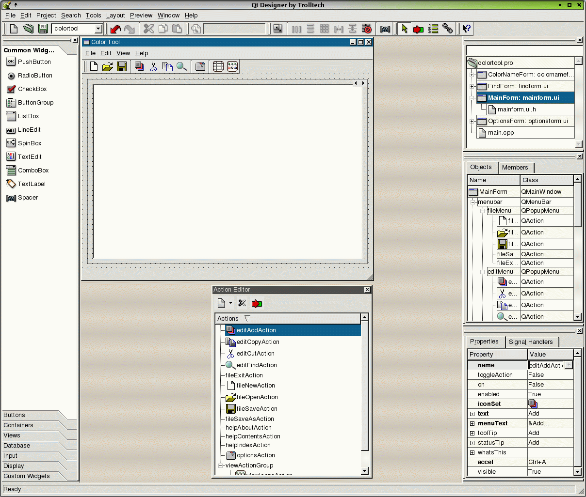

| Home | All Classes | Main Classes | Annotated | Grouped Classes | Functions |
This manual presents Qt Designer, a tool for designing and implementing user interfaces built with the Qt multiplatform GUI toolkit. Qt Designer makes it easy to experiment with user interface design. At any time you can generate the code required to reproduce the user interface from the files Qt Designer produces, changing your design as often as you like. If you used an earlier version you will find yourself immediately productive in the new version since the interface is very similar. And you will also find new widgets and new and improved functionality which have been developed as a result of your feedback.
Qt Designer helps you build user interfaces with layout tools that move and scale your widgets (controls in Windows terminology) automatically at runtime. The resulting interfaces are both functional and attractive, comfortably suiting your users' operating environments and preferences. Qt Designer supports Qt's signals and slots mechanism for type-safe communication between widgets. Qt Designer includes a code editor which you can use to embed your own custom slots inside the generated code. Those who prefer to separate generated code from hand crafted code can continue to use the subclassing approach pioneered in the first version of Qt Designer.
The manual introduces you to Qt Designer by leading you through the development of example applications. The first seven chapters are tutorials, each designed to be as self-contained as possible. Every chapter, except the first three, assumes that you are familiar with the material in chapters two and three which cover the basics of building a Qt application with Qt Designer. Here's a brief overview of the chapters:
Chapter one, Quick Start, is a fast hands-on tutorial that takes you through the creation of a short, simple dialog application. The aim of this chapter is to give you a feel for how Qt Designer works, with explanations and details deferred to later chapters.
Chapter two, Creating a Main Window Application, introduces Qt Designer and takes you step by step through the creation of a small but fully functional application. Along the way you will learn how to create a main window with menus, toolbars and a status bar. Most of the application's implementation will be covered, but the custom dialogs are deferred until chapter three. In the course of this chapter you will use the form and property editors to customize the application. You'll also learn how to use Qt's signals and slots mechanism and Qt Designer's built-in code editor to make the application functional. We will also explain how to use qmake to generate a Makefile so that you can compile and run the application.
In chapter three, Creating Dialogs, we will create the custom dialogs required by the main window application created in chapter two. In addition to demonstrating various ways of creating dialogs, you will also learn how to lay out forms using the layout tools.
Chapter four, The Designer Approach, provides information on the Qt Designer approach to developing applications, and explains some of the rationale behind Qt Designer.
Chapter five, Subclassing and Dynamic Dialogs, will show you how to subclass a form; this allows you to clearly separate the user interface from the underlying code that implements its functionality. Additional information on qmake and uic is included in this chapter. This chapter will also explain how you can dynamically load dialogs from .ui files into your application using QWidgetFactory and how to access the widgets and sub-widgets of these dialogs.
Chapter six, Creating Custom Widgets, explains how you can create your own custom widgets. Both the simple method, that was introduced with the first version of Qt Designer, and the new more powerful method using plugins, are explained.
Chapter seven, Creating Database Applications introduces Qt's SQL classes and takes you through an example that demonstrates how to execute SQL queries and how to set up master-detail relationships, perform drilldown and handle foreign keys.
Chapter eight, Customizing and Integrating Qt Designer, focuses on Qt Designer itself, showing you how to customize Designer, how to integrate Designer with Visual Studio and how to create Makefiles.
The remaining chapters provide reference material that explains Qt Designer's menu options, toolbars, key bindings, dialogs, wizards, and windows in detail.
This manual assumes that you have some basic knowledge of C++ and the Qt GUI toolkit. If you need to learn more about C++ or Qt there are a vast number of C++ books available, and a small but increasing number of Qt books. Qt comes with extensive online documentation and many example applications that you can try.
The Enterprise Edition of Qt includes the Qt SQL module. In Creating Database Applications we demonstrate how to build SQL applications with Qt Designer; this chapter requires some knowledge of SQL and relational databases.
This version of Qt Designer has a great deal more functionality than its predecessor. For example, the code for custom slots can be edited directly in Qt Designer; main windows with actions, toolbars and menus can be created; layouts that incorporate splitters can be used; and plugins allow you to package any number of custom widgets and make them available to Qt Designer. Many other enhancements have been incorporated, from small improvements in the user interface to improved efficiency, for example the ability to share pixmaps across all the forms in an application.
This version of Qt Designer introduces project files which make it easy to switch between all the forms in an application, and to maintain a common set of database settings and images. Although subclassing is fully supported, writing code directly in Qt Designer offers a number of benefits which are covered in The Designer Approach chapter. A new library, libqui, has also been introduced which allows you to load dialogs dynamically at runtime from Qt Designer's .ui files. This allows you to provide your application's users with considerable interface customizability without them needing to use C++.
Although the new version of Qt Designer introduces new approaches and techniques you can ignore these aspects and simply use it in exactly the same way as you used the version supplied with Qt 2.x, if you just want a simple but powerful single dialog visual design tool.
Qt Designer now features a start-up dialog for fast access to recently used files, etc. (It can be switched off if you don't want it.)
The signals and slots dialog has changed significantly. It is far easier to use and much faster for creating lots of connections in one go. You can still click and drag to create connections, but the new dialog is much quicker.
Widgets are now accessible using the Toolbox. (All the original toolbars are still available.) This provides the same easy access as toolbar buttons, and also shows the names of the widgets and takes up less space.
QWidgetStack is now available as a container widget. The new example demonstrates its use.
.ui.h files may now contain arbitrary C++, including const definitions, #includes, plain functions, etc.
When you select multiple-widgets their common properties are shown in the property editor and can be changed collectively.
The tool box widget used by Qt Designer since Qt 3.1 is now available as a Qt widget for use in your own programs. The widget is called QToolBox.
The menu editor in Qt Designer has been redesigned to make it easier to visually design application main windows.
Numerous small improvements to usability have also been incorporated in this version.

Qt Designer
If you have any comments, suggestions, criticisms or even praise regarding this manual, please let us know at doc@trolltech.com. Bug reports on Qt or Qt Designer should be sent to qt-bugs@trolltech.com. You might also like to join the qt-interest mailing list, which Qt Designer's developers read and contribute to; see http://lists.trolltech.com for further details.
| Copyright © 2007 Trolltech | Trademarks | Qt 3.3.8
|